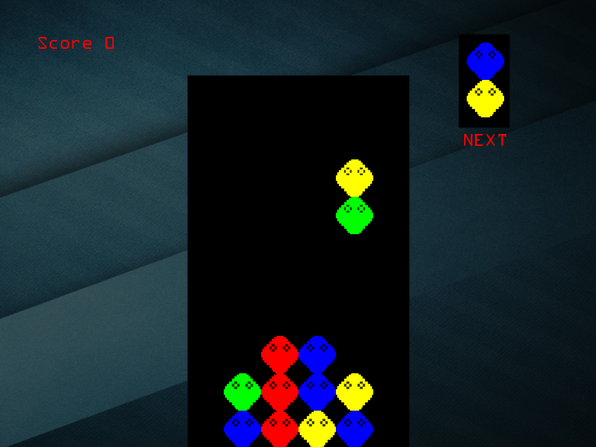
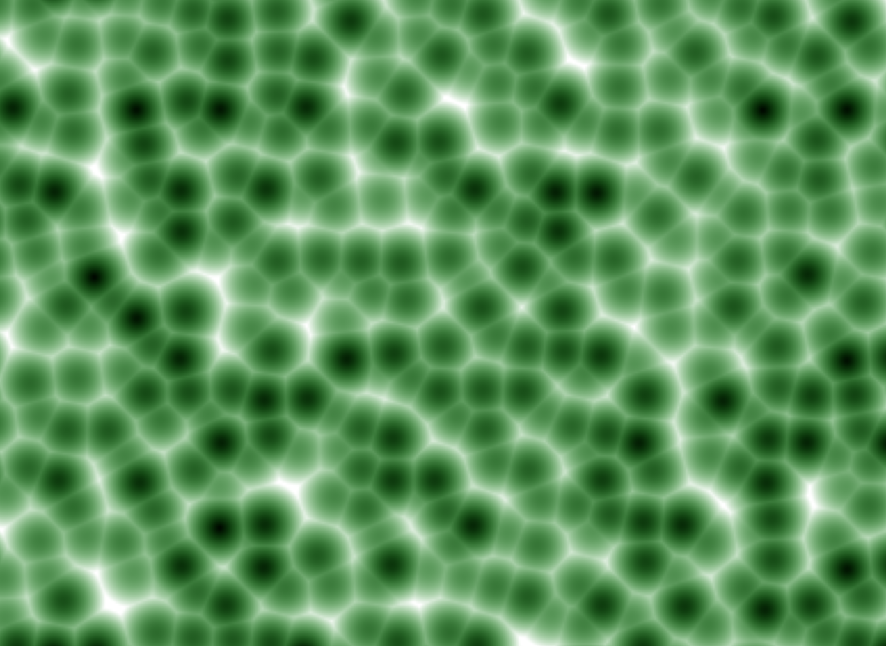
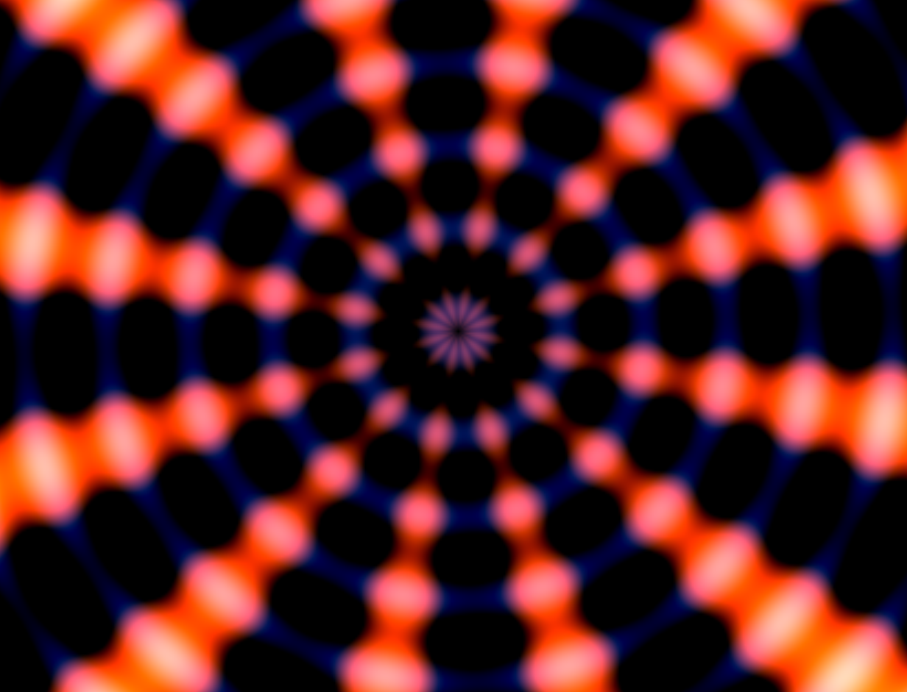
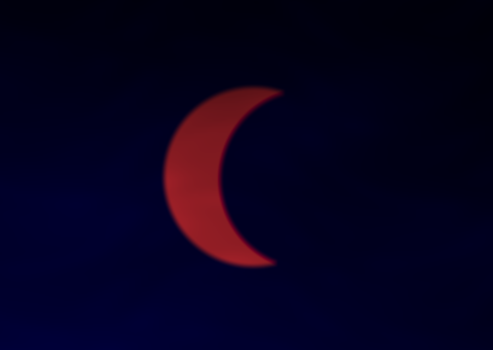

Complete Games
Super Bubble : A Puyo Puyo Clone

Windows executable
Source code
Better known as Dr. Robotnik's Mean Bean Machine for Sega Mega Drive, this version has been written in C++ and uses OpenGL for rendering. My starting point was a handful of classes for resource management and sprite rendering from learnopengl.com. I extended the shaders to support sprite clipping and implemented the gameplay. This also includes networked multi-play using a very simple protocol and making use of the ENet library.
Pixel Shaders
I enjoy writing pixels shaders on glslsandbox.com. The vertex shader is fixed and only a full-screen quad is displayed. The effects are created completly in the pixel shader.
Cellular Procedural Texture

I implemented this after reading about cellular texturing algorithms in the excellent book: Texturing and Modelling, A Procedural Approach.
Radial Effect

Here I was experimenting with polar coordinates.
Eclipse

I created this on the day of the 2015 eclipse. The real eclipse was very disappointing as it was cloudy. So I was inspired to create this. I came up with the eclipse effect and then later added clouds using an algorithm by Geoffrey Gardner (Visual Simulation of Clouds, SIGGRAPH '85).